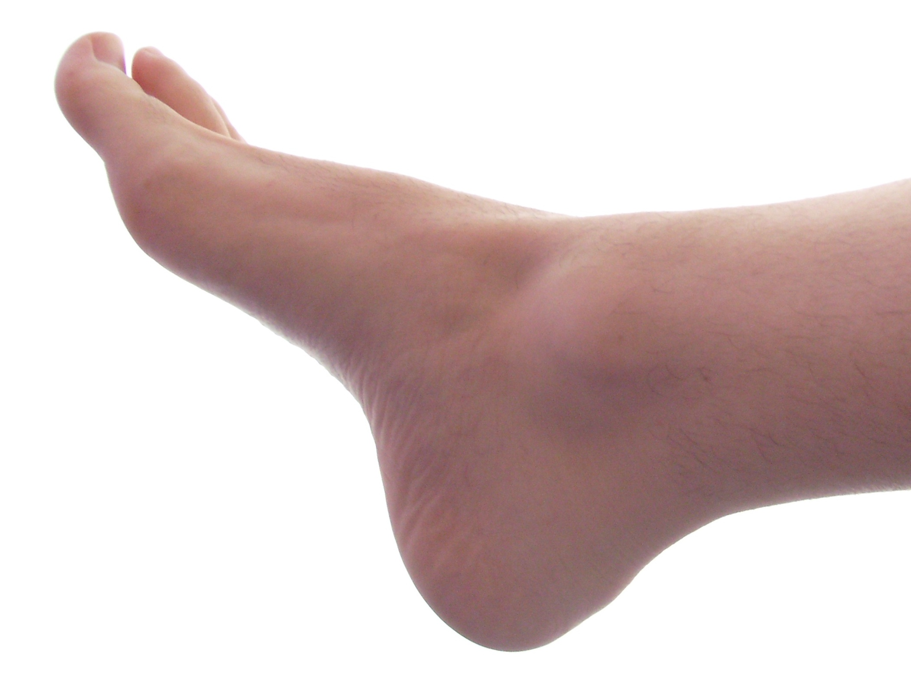
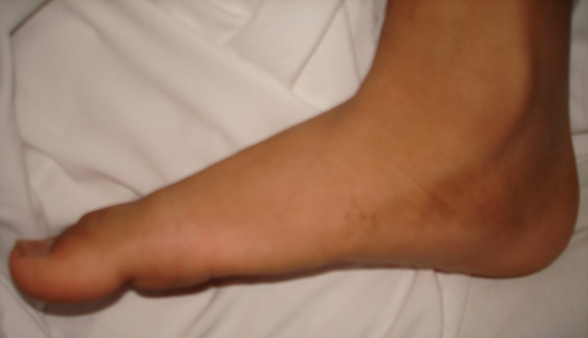
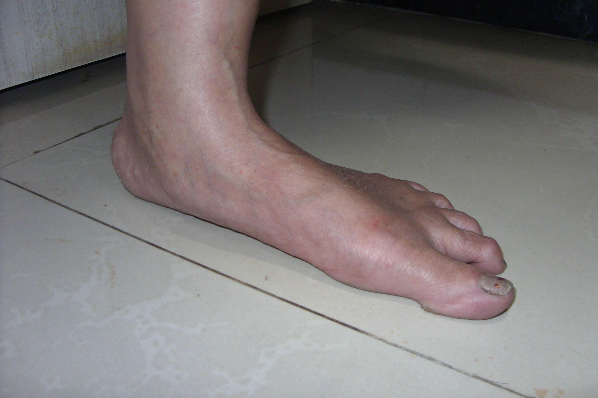
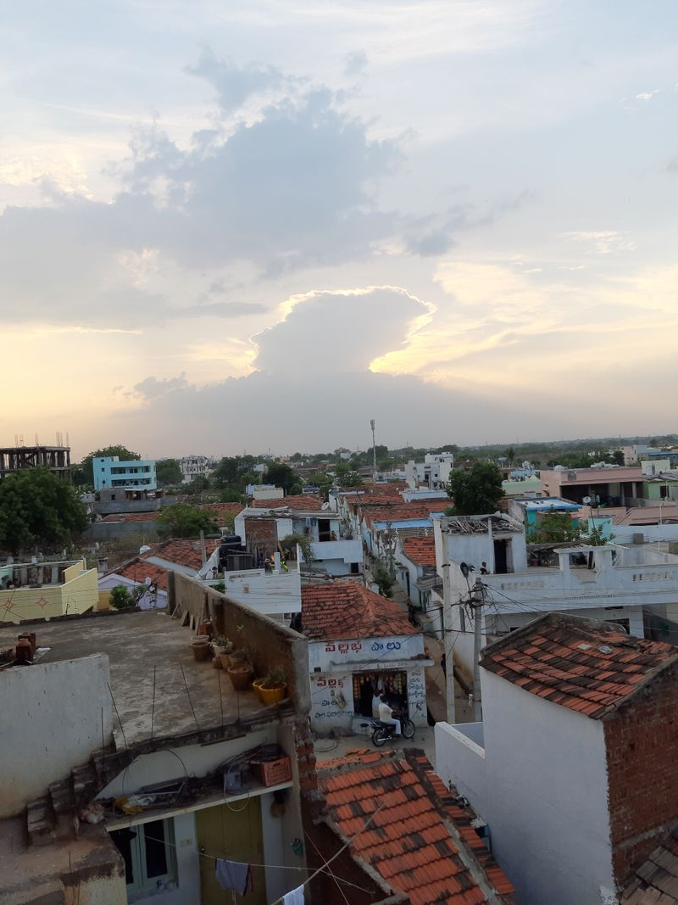

Flat Feet & Knee Pain: The Hidden Connection
← Back to Articles

What Are Flat Feet?
Flat feet (also called pes planus or fallen arches) describe a condition where the arch of the foot collapses, causing the entire sole to touch the ground. While some people live pain-free, many develop symptoms that travel upward from the feet into the knees, hips, and lower back.
How Flat Feet Cause Knee Pain
When the arch drops, the foot rolls inward too much — a movement called overpronation. That rolling motion twists the tibia (shin bone), which changes the angle at which the knee bends and absorbs impact.

Image: Wikimedia Commons (CC BY-SA 3.0)
Over time, this can lead to:
- Medial knee pain — inner knee joint irritation
- Patellofemoral pain — aching around or behind the kneecap
- Joint shear forces — abnormal cartilage stress
- Hip & lower back compensation — altered posture from the knees up
In short: the feet are the foundation. If they're unstable, the knee pays the price.
The Two Muscle Systems You Need to Train
Not all foot muscles are the same. Understanding the difference is key to fixing flat feet.
Intrinsic Foot Muscles
These are the small muscles inside the foot itself. They provide fine stability and maintain the arch during balance and gait.
Best exercises:
- Towel scrunches — use a smooth, soft surface (tile or wood, not carpet) so the towel slides easily. Scrunch it toward you with your toes to activate the arch.
- Marble pick-up / Hacky Sack — picking up small objects with your toes builds coordination and arch control. A Hacky Sack is even better because it's more fun and less repetitive.
Extrinsic Foot Muscles
These are the larger muscles in the lower leg that control foot movement through tendons. They provide the main deceleration and power during walking and running.
Key muscles: tibialis anterior, gastrocnemius, soleus, peroneals, flexor hallucis longus, tibialis posterior.
Best exercises:
- Tibialis raises — 1–2 sets daily, 15–20 reps per leg. Strengthens deceleration and arch lift.
- Calf raises — build from 2 feet → 1 foot → added weight. Further from the wall = harder. Targets gastrocnemius and soleus.
Tip: Toe separators (like Correct Toes) help by spreading the toes so the intrinsic muscles can function properly. Start with 15–30 minutes daily and work up to wearing them during exercise.
Other Essential Treatments
- Orthotics — short-term arch support & pain relief. Don't rely on them forever — they can weaken foot muscles if used alone.
- Supportive shoes — maintain alignment. Good arch support, avoid worn-out shoes.
- Physical therapy — customized rehab, especially if pain is persistent.
- Weight management — reduce foot load. Less strain = faster recovery.
- Stretching — calves, hamstrings, and plantar fascia.
- Rest & ice — reduce inflammation after activity-related flare-ups.

Recommended Videos
Tibialis Raise Demonstration — Watch on YouTube
Daily Routine (Start Here)
- Morning: 2 sets of Tibialis raises
- Evening: 2 sets of Calf raises
- Anytime: Hacky Sack or towel scrunches while watching TV
- All day: Wear toe separators in short sessions
Consistency beats intensity. Even 10 minutes a day of targeted foot training will show improvement over weeks and months.
Key Takeaways
- Flat feet change knee alignment and cause pain through overpronation.
- You need both intrinsic (inside foot) and extrinsic (lower leg) muscle training.
- Orthotics help temporarily, but true correction requires active strengthening.
- If the knee is painful, strengthen it with controlled single-leg exercises — don't avoid using it.
- For meniscus concerns, focus on rehab, not rest alone.
Sources & Further Reading
- Wikipedia: Pes planus
- The Foot Collective: thefootcollective.com
- Research on short foot exercises and gluteal strengthening for flat foot management
Disclaimer
This article is for educational purposes. Always consult a healthcare provider for diagnosis and personalized treatment, especially if you experience severe or persistent knee or foot pain.